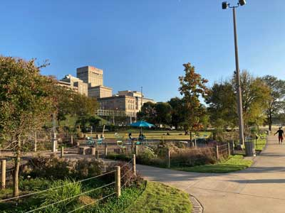
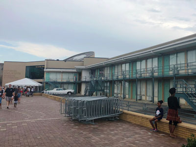

Memphis Travel Guide
City on the Mississippi River in southwest Tennessee, famous for the influential strains of blues, soul and rock 'n' roll that originated there. Elvis Presley, B.B. King and Johnny Cash recorded albums at the legendary Sun Studio, and Presley's Graceland mansion is a popular attraction. Other music landmarks include the Rock 'n' Soul Museum, Blues Hall of Fame and Stax Museum of American Soul Music
Top Locations
Places to See in Memphis
Arcade Restaurant
Retro-style diner serving classic Southern comfort food and nostalgic American fare in a vintage setting.
Beale Street
Historic entertainment district lined with music clubs, restaurants, shops, and landmarks that celebrate the heritage of blues, soul, and rock 'n' roll.
Belz Museum of Asian and Judaic Art
Extensive private collection of Asian and Judaic art displayed in intricately curated galleries featuring jade sculptures, imperial artifacts, and religious pieces.
Big River Crossing
Pedestrian and bicycle bridge crossing the Mississippi River with panoramic skyline views, interpretive exhibits, public art, and direct connections to trails on both sides of the river.
Blues Hall of Fame Museum
Interactive museum honoring blues legends through multimedia exhibits, rare memorabilia, and rotating art displays.
Cotton Museum at the Memphis Cotton Exchange
Historic museum exploring the global impact of the cotton industry through immersive exhibits, artifacts, and educational displays in a former trading floor.
Dixon Gallery and Gardens
Art museum and botanical garden offering rotating exhibitions, educational programs, and seasonal floral displays across 17 acres of cultivated grounds.
Ronincmc, CC BY-SA 4.0, via Wikimedia Commons; Image Size Adjusted

Graceland
Mansion on a 13.8-acre (5.6-hectare) estate in Memphis, once owned by singer and actor Elvis Presley
Ronincmc, CC BY-SA 4.0, via Wikimedia Commons; Image Size Adjusted
Mason Temple: Church of God in Christ World Headquarters
Historic church headquarters and civil rights landmark featuring monumental architecture, religious heritage exhibits, and the sanctuary where Dr. Martin Luther King Jr. delivered his final public speech.
Memphis Botanic Garden
Expansive 96-acre garden featuring themed plant collections, seasonal blooms, and interactive family-friendly exhibits including a whimsical children’s garden.
Memphis Brooks Museum of Art
Expansive fine arts museum featuring over 10,000 works across 29 galleries, with rotating exhibitions, educational programs, and community events.
Memphis Pyramid
Bass Pro Shops "megastore", which includes shopping, a hotel, restaurants, a bowling alley, and an archery range, with an outdoor observation deck
Memphis Rock 'n' Soul Museum
Smithsonian-affiliated museum chronicling the birth of rock and soul music through immersive exhibits, rare artifacts, and personal stories of musical pioneers.

Memphis Zoo
Zoo, located in Midtown, Memphis, is home to more than 3,500 animals representing over 500 different species

Mississippi River Park
Relaxed riverfront park with serene sunset views, play areas, fire pits & picnic tables

Bjoertvedt, CC BY-SA 4.0, via Wikimedia Commons; Image Size Adjusted

National Civil Rights Museum
Museum tracing the history of the civil rights movement is built around the former Lorraine Motel, which was the site of the assassination of Martin Luther King Jr.
Orpheum Theatre
2,308-seat venue listed on the National Register of Historic Places, is located in downtown Memphis
Shelby County General Sessions Court
Neoclassical circa-1909 courthouse with Ionic columns, featured in movie "Silence of the Lambs"
Stax Museum of American Soul Music
Museum dedicated to preserving the legacy of American soul music through immersive exhibits, iconic memorabilia, and the historic story of Stax Records.
Chris Brown, CC BY 2.0, via Wikimedia Commons; Image Size Adjusted

Sun Studio
Recording studio opened by rock-and-roll pioneer Sam Phillips where rock and roll, country music, and rockabilly artists, including Johnny Cash, Elvis Presley, Carl Perkins, Roy Orbison, and Jerry Lee Lewis, recorded throughout the mid-to-late 1950s
Tom Lee Park
City park encompassing about 30 acres parallel to the Mississippi River for about one mile (1.6 km), offering panoramic views of the Mississippi River and the shores of Arkansas on the opposite side
Overview
Memphis is a city along the Mississippi River in southwestern Tennessee, the anchor of West Tennessee and the greater Mid-South region spanning parts of neighboring Arkansas, Mississippi, and the Missouri Bootheel. With about 600,000 residents in the city and 1.3 million in the metropolitan area, it is one of the most historically and culturally significant cities in the South. Memphis is world-famous as the home of the blues, the birthplace of rock and roll, the home of Elvis Presley's Graceland, a capital of soul music and Southern barbecue, and a pivotal site of the civil rights movement. It is also a major transportation hub: it is the home of FedEx, which was founded here in 1971, and its airport is one of the busiest cargo airports in the world.
People come to Memphis for the music, the food and the history. Visitors walk Beale Street, tour Graceland and Sun Studio, eat dry-rub ribs, visit the National Civil Rights Museum, watch the famous ducks at the Peabody Hotel and stroll along the Mississippi riverfront. It is a down-to-earth, soulful city with friendly people, affordable prices and a creative spirit, and it makes a fine base for exploring the Mississippi Delta and the blues trail. Memphis is particularly popular in the spring, when Memphis in May brings barbecue and music festivals to the riverfront, and for Elvis fans in August, when "Elvis Week" marks the anniversary of his death.
The bluffs over the Mississippi were home to Native American peoples including the Chickasaw, and the Spanish explorer Hernando de Soto reached the river near here in 1541. Memphis was founded in 1819 by John Overton, James Winchester and future president Andrew Jackson, and named for the ancient Egyptian capital on the Nile. It grew into one of the largest cities of the Antebellum South as a market for cotton, lumber and the slave trade, was captured by Union forces in the Battle of Memphis in 1862 and became one of the world's largest cotton markets after the Civil War. Yellow fever epidemics in the 1870s killed thousands and drove away much of the population, but the city rebounded in the early 20th century. Home to Tennessee's largest African-American population, the city played a central role in the civil rights movement, notably the 1968 sanitation workers' strike, and was the site of Martin Luther King Jr.'s assassination on April 4, 1968, at the Lorraine Motel, which is now the Smithsonian-affiliated National Civil Rights Museum. King's final speech, "I've Been to the Mountaintop," was delivered the night before at Mason Temple.
Memphis is the birthplace of the blues as a popular music, where W.C. Handy, the "Father of the Blues," published "The Memphis Blues" in 1912, and a fertile ground for the electric Memphis blues sound that developed on Beale Street after World War II. Sam Phillips's Sun Studio, opened in 1950, recorded what is often called the first rock and roll record, "Rocket 88," and launched the careers of Elvis Presley, Johnny Cash, Jerry Lee Lewis, Carl Perkins and Roy Orbison. Stax Records produced the gritty Memphis soul sound of Otis Redding, Sam & Dave and Booker T. & the M.G.'s, and Hi Records produced Al Green. Visitors can learn about this heritage at the Stax Museum of American Soul Music, the Memphis Rock 'n' Soul Museum, the Blues Hall of Fame Museum and the Sun Studio tour. Live music can be heard nightly in blues clubs on Beale Street, juke joints and bars in Midtown and Cooper-Young, at the Orpheum Theatre and during festivals such as the Beale Street Music Festival, Cooper-Young Festival and Memphis in May.
Beale Street, a historic, neon-lit street in downtown Memphis, is known as the home of the blues and one of the country's most famous entertainment districts. Beginning in the 1860s, it became a center of Black business and entertainment where musicians such as W.C. Handy, B.B. King and Muddy Waters played, and today its blocks are lined with clubs, bars, restaurants, souvenir shops and street performers. Clubs include B.B. King's Blues Club, Rum Boogie Cafe and Silky O'Sullivan's, and at W.C. Handy Park there is almost always live music. The street is closed to cars in the evening, and drinks may be carried outside in plastic cups, and it is lively and crowded most nights, especially on weekends and during festivals, though it is more laid back during the day. Nearby are the Orpheum Theatre, the Peabody Hotel and the Arcade Restaurant.
Top attractions include Graceland, Elvis Presley's mansion and now a major museum complex; Sun Studio; the Peabody Hotel, where the "Peabody Ducks" march to the lobby fountain every day; the Memphis Pyramid, now home to the largest Bass Pro Shops in the world with an observation deck, restaurants and a hotel; and the Big River Crossing, a pedestrian and bicycle bridge across the Mississippi to Arkansas. Other sights include the Arcade Restaurant, the city's oldest cafe, the Cotton Museum, Mud Island River Park and its Mississippi River Museum, and Mason Temple. Historic Elmwood Cemetery is one of the oldest rural garden cemeteries in the South, and Memorial Park Cemetery is noted for its sculptures by Mexican artist Dionicio Rodriguez.
The National Civil Rights Museum at the Lorraine Motel is one of the most powerful museums in the country. Music museums include the Stax Museum, the Rock 'n' Soul Museum and the Blues Hall of Fame. Art lovers can visit the Memphis Brooks Museum of Art, the Dixon Gallery and Gardens and the Belz Museum of Asian and Judaic Art, and the Pink Palace Museum and the Metal Museum are good for local history and crafts. The Orpheum Theatre, a grand 1928 movie palace, features Broadway shows, Ballet Memphis and Opera Memphis, and the Levitt Shell in Overton Park, the site of Elvis Presley's first paid concert in 1954, hosts free concerts all summer.
Major Memphis parks include Tom Lee Park on the Mississippi riverfront, which was redesigned and reopened in 2023 and is home to Memphis in May; W.C. Handy Park on Beale Street; Overton Park, with its Old Forest, a rare urban old-growth forest; Audubon Park; the Lichterman Nature Center; the Memphis Botanic Garden; and Jesse H. Turner Park. Shelby Farms Park, at the eastern edge of the city and covering about 4,500 acres, is one of the largest urban parks in the United States, with lakes, trails and a bison herd. The Memphis Zoo in Overton Park is regarded as one of the best zoos in the country, and Meeman-Shelby Forest State Park lies just north of the city along the river.
Memphis-style barbecue has achieved international fame, and the city's signature dish is dry-rub pork ribs, seasoned with a paprika-based spice mix and slow-cooked over hickory or charcoal, as well as pulled pork sandwiches topped with coleslaw and barbecue spaghetti. Well-known spots include Rendezvous, Central BBQ, Payne's and Cozy Corner, and the month-long Memphis in May festival includes the World Championship Barbecue Cooking Contest, the largest pork barbecue contest in the world. Memphis is also known for its pan-fried chicken, particularly at Gus's World Famous Fried Chicken, as well as soul food, Delta hot tamales, catfish, fried green tomatoes, and banana pudding. Breakfast and plate lunches at the Arcade Restaurant, said to be Elvis's favorite, add a taste of old Memphis, and a growing number of chef-driven restaurants in Midtown, Cooper-Young and Downtown, along with Vietnamese, Mexican and Ethiopian restaurants, show off the city's modern dining scene.
The Memphis Grizzlies of the NBA, who moved to Memphis from Vancouver in 2001, play at the FedExForum downtown and are the only team in Memphis from one of the "big four" major sports leagues. The Memphis Redbirds (Triple-A baseball) and Memphis 901 FC (USL soccer) play at AutoZone Park, and the Memphis Showboats (UFL football) play at Simmons Bank Liberty Stadium. The University of Memphis Tigers play football at Simmons Bank Liberty Stadium, home of the Liberty Bowl, and basketball at the FedExForum. The city also hosts the FedEx St. Jude Championship on the PGA Tour at TPC Southwind and the Southern Heritage Classic.
Sources: This article uses material from the Wikipedia articles "Memphis, Tennessee" and "History of Memphis, Tennessee", which are released under the Creative Commons Attribution-Share-Alike License 3.0. Additional information from Memphis Tourism, Graceland, the National Civil Rights Museum, the Memphis in May International Festival, the Beale Street Merchants Association, the Shelby Farms Park Conservancy, the National Weather Service Memphis, the City of Memphis and the official websites of the attractions, museums and teams mentioned.